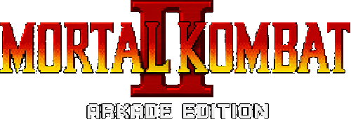

Move List/Bios - Universal - NES/Famicom (Unlicensed)


You can e-mail corrections/additions to The Webmaster
Last updated: 08/23/26
MKKomplete is not affiliated with Drax01 in any way other than giving them props for the game.
Key:
U = Up/Jump
D = Down/Crouch
F = Forward/Toward
B = Back/Away/Block
| Universal: P = Punch K = High Kick |
NES/Famicom: P = A K = B |
BarakaBio:
He led the attack against Liu Kang's Shaolin temple. Baraka belongs to a nomadic race of mutants living in the Wastelands of the Outworld. His fighting skills gained the attention of Shao Kahn, who recruited him into his army.
Special Moves:
Blade Swipe: B, B, K (Close)
Blade Spark: D, F, P
Blade Fury: D, B, K
JaxBio:
His real name is Maj. Jackson Briggs, leader of a top U.S. Special Forces unit. After receiving a distress signal from Lt. Sonya Blade, Jax embarks on a rescue mission. One that leads him into a ghastly world where he believes that Sonya is still alive.
Special Moves:
Energy Wave: D, F, P
Gotcha Grab: D, B, K (Close)
Ground Pound: B, B, K
Johnny CageBio:
After Shang Tsung's tournament, the martial arts superstar disappears. He follows Liu Kang into the Outworld. There he will compete in a twisted tournament which holds the balance of Earth's existence - as well as a script for another blockbuster movie.
Special Moves:
High Green Orb: D, F, P
Shadow Kick: B, B, K
Shadow Uppercut: D, B, K
KitanaBio:
Her beauty hides her true role as personal assassin for Shao Kahn. Seen talking to an Earthrealm warrior, her motives have come under suspicion by her twin sister, Mileena. But only Kitana knows her own true intentions.
Special Moves:
Fan Throw: D, F, P
Fan Lift: D, B, K
Square Wave Punch: B, B, K
Kung LaoBio:
A former Shaolin monk and member of the White Lotus Society, he is the last descendant of the Great Kung Lao who was defeated by Goro 500 years ago. Realizing the danger of the Outworld menace, he joins Liu Kang in entering Shao Kahn's contest.
Special Moves:
Hat Throw: D, F, P
Teleport: D, B, K
Dive Kick: B, B, K
Liu KangBio:
After winning the Shaolin Tournament from Shang Tsung's clutches, Liu Kang returns to his temples. He discovers his sacred home in ruins, his Shaolin brothers killed in a vicious battle with a horde of Outworld warriors. Now he travels into the dark realm
to seek revenge.
Special Moves:
High Fireball: D, F, P
Flying Kick: B, B, K
Bicycle Kick: D, B, K
MileenaBio:
Serving as an assassin along with her twin sister Kitana, Mileena's dazzling appearance conceals her hideous intentions. At Shao Kahn's request, she is asked to watch for her twin's suspected dissension. She must put a stop to it at any cost.
Special Moves:
Sai Throw: D, F, P
Teleport Kick: B, B, K
Ground Roll: D, B, K
RaidenBio:
Watching events unfold from high above, the Thunder God realizes the grim intentions of Shao Kahn. After warning the remaining members of the Shaolin Tournament, Raiden soon disappears. He is believed to have ventured into the Outworld alone.
Special Moves:
Lightning Bolt: D, F, P
Torpedo: B, B, K
Electric Grab: D, B, K
ReptileBio:
As Shang Tsung's personal protector, the elusive Reptile lurks in the shadows, stopping all those who would do his master harm. His human form is believed to disguise a horrid reptilian creature whose race was thought extinct millions of years ago.
Special Moves:
Forceball: D, F, P
Acid Spit: D, B, K
Invisibility: B, B, K (Do again to reappear)
ScorpionBio:
The hell-spawned specter rises from the pits. After learning of Sub-Zero's return, he again stalks the ninja assassin - following him into the dark realm of the Outworld, where he continues his own unholy mission.
Special Moves:
Fireball: D, F, P
Teleport Punch: D, B, K
Leg Takedown: B, B, K (Close)
Shang TsungBio:
After losing control of the Shaolin Tournament, Tsung promises his ruler Shao Kahn to shape events that will lure the Earth warriors to compete in his own contest. Convinced of this plan, Shao Kahn restores Tsung's youth and allows him to live.
Special Moves:
Single Flaming Skull: D, F, P
Double Flaming Skulls: F, F, P
Triple Flaming Skulls: F, F, F, P
Sub-ZeroBio:
Thought to have been killed in the Shaolin Tournament, Sub-Zero mysteriously returns. It is believed that he traveled into the Outworld to again attempt to assassinate Shang Tsung. To do so, he must fight his way through Shao Kahn's tournament.
Special Moves:
Freeze: D, F, P
Slide: B, B, K
Ground Freeze: D, B, K
KintaroBio:
After Goro's loss in the previous tournament Shao Kahn appoints the tiger striped Shokan as head of his Outworld forces. Out for revenge against Liu Kang, Kintaro will destroy all those who dare challenge the emperor. He will prove that the Shokan are
the strongest of all the Outworld warriors.
Special Moves:
Fireball Spit: D, F, P
Teleport Stomp: B, B, K
Shao KahnBio:
The Emperor of Outworld Shao Kahn is enraged when he learns of Outworld's loss in the 10th tournament. Unwavered in his plans to invade the Earthrealm, he sets into motion events leading to his own Mortal Kombat tournament. All of Earth's warriors will
be lured to Outworld, and there they shall meet their end at the hands of Shao Kahn.
Special Moves:
Spear Toss: D, F, P
Shoulder Charge: D, B, K
Twirly Bird: B, B, K